Zoom to Circuit
KiCad automatically creates a title block for each new schematics file.
It is inconvenient to have a title block when you want to automatically zoom into the circuit diagram.
To avoid this, select the circuit,
then click on the "Zoom to Objects" button.
Pan the Diagram
The touchpad two finger drag will zoom in or out, as expected.
To pan the diagram, hold the shift-key and drag the touchpad with two fingers.
This will by default pan the diagram up or down, but not left or right.
To enable left or right pan, go to Preferences -> Preferences
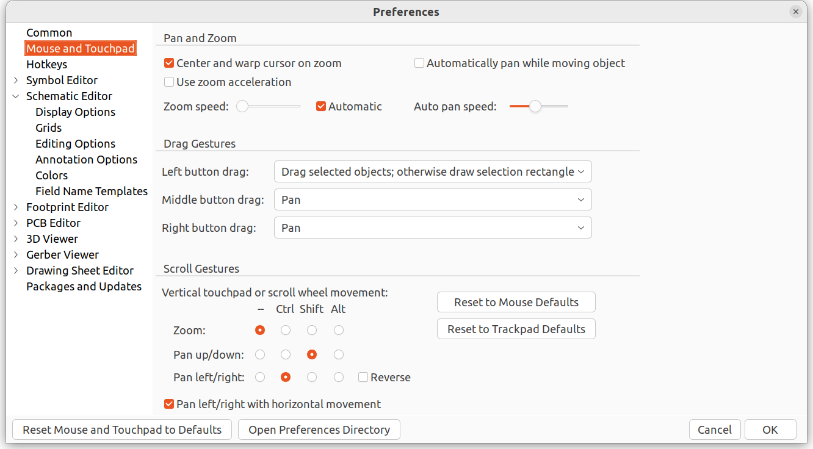
Check the "Pan left/right with horizontal movement" option.
Adding Resistors to Schematic
The symbol for a resistor does not show up in the list of Nicknames in the symbol library
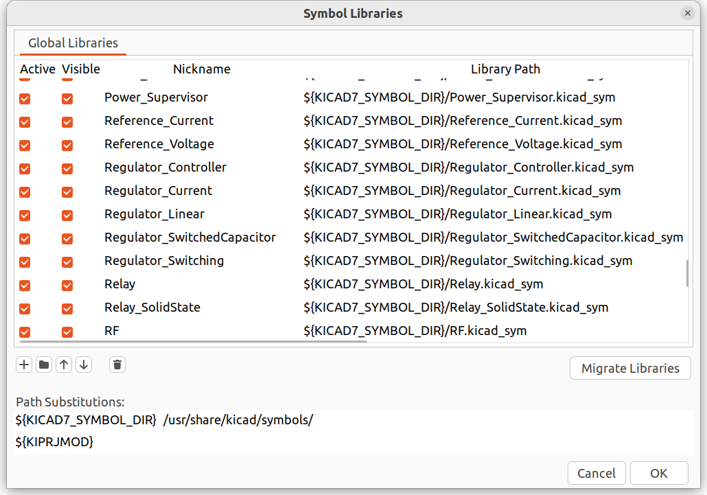
However when adding a symbol, it can be found under the item named "Device"
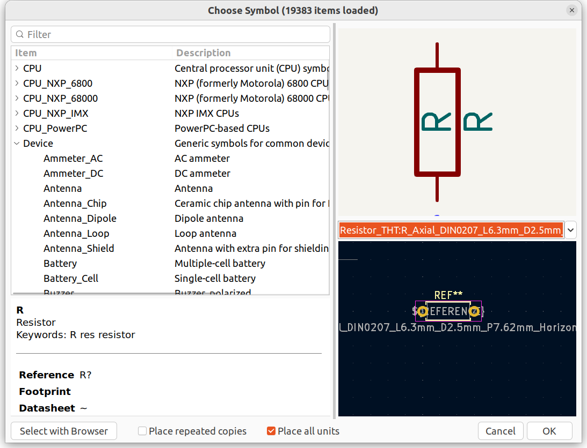
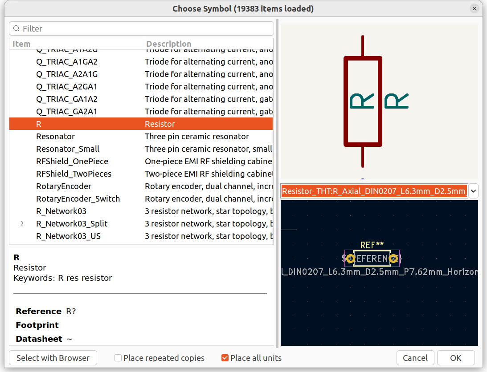
Import Footprints
Every footprint is saved in a file with the extension "kicad_mod"
To import footprints:
- Go to Preferences -> Manage Footprint Libraries
- Click on the folder symbol (Add existing library to table)
- Find the folder in which your footprints are located and select it.
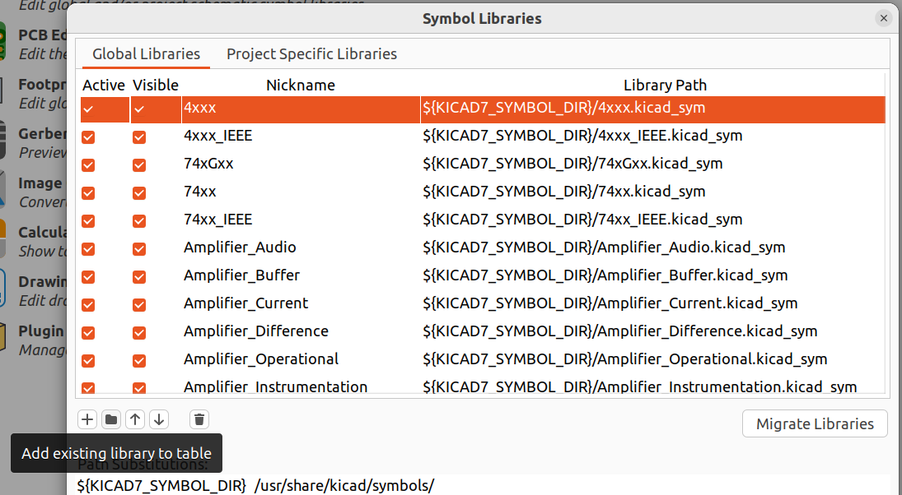
https://support.snapeda.com/en/articles/5995733-how-to-import-into-kicad-v6-and-later
Note: if you add a new footprint file to the folder, you will have to remove and re-add the library.
Add edge cut to PCB in PCB Editor
This will allow cutting a PCB out of a larger copper blank,
as well as define the zero X- and Y coordinates for the CNC milling.
Select Edge.cuts as the active layer
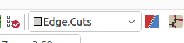
or
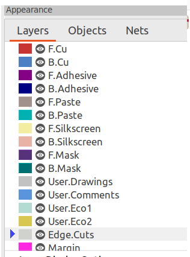
click on Draw a line
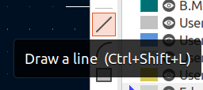
and draw the board edge.
Make sure the top left is at X=0 and Y=0.
Enlarge pads for PCB milling
When pads are small, there is a chance that they will peel off the PCB after isolation milling.
You can enlarge those pads for better chance of success.
Example:
Original footprint
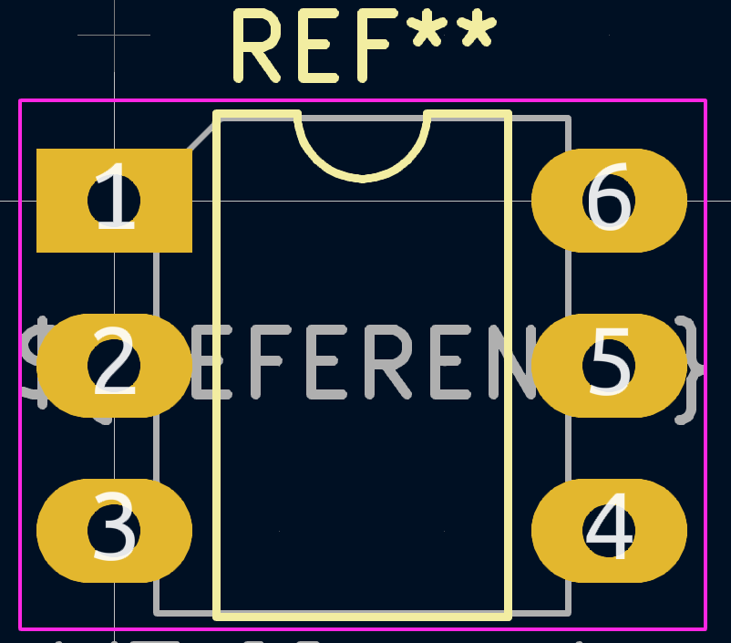
|
Enlarged pads
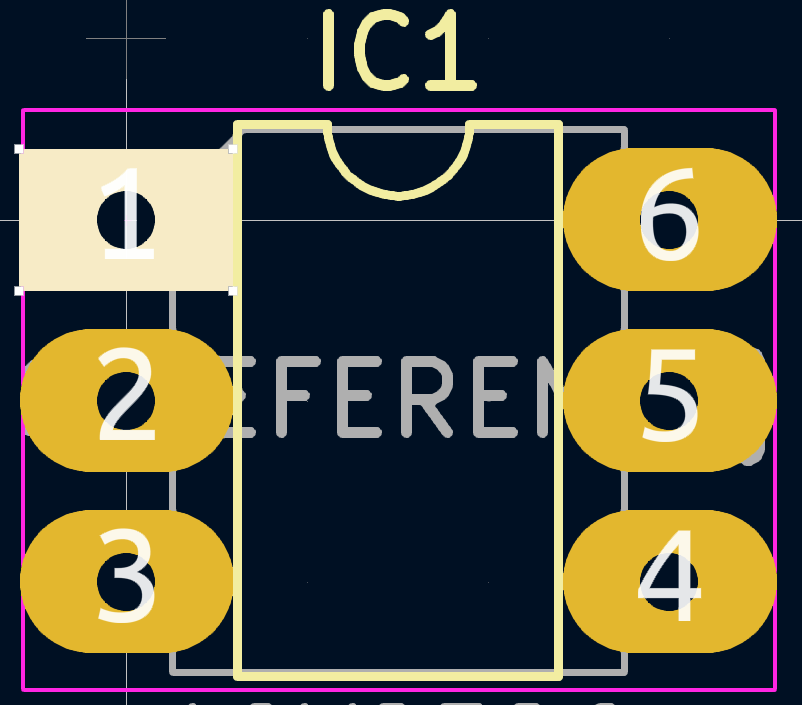
|
In this example, we change the pad size X and Y values from
2.4mm and 1.6mm
to
3mm and 2.4mm
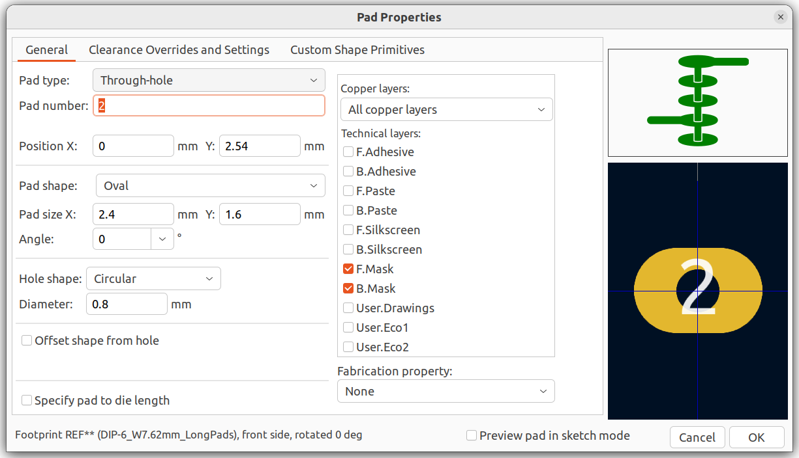
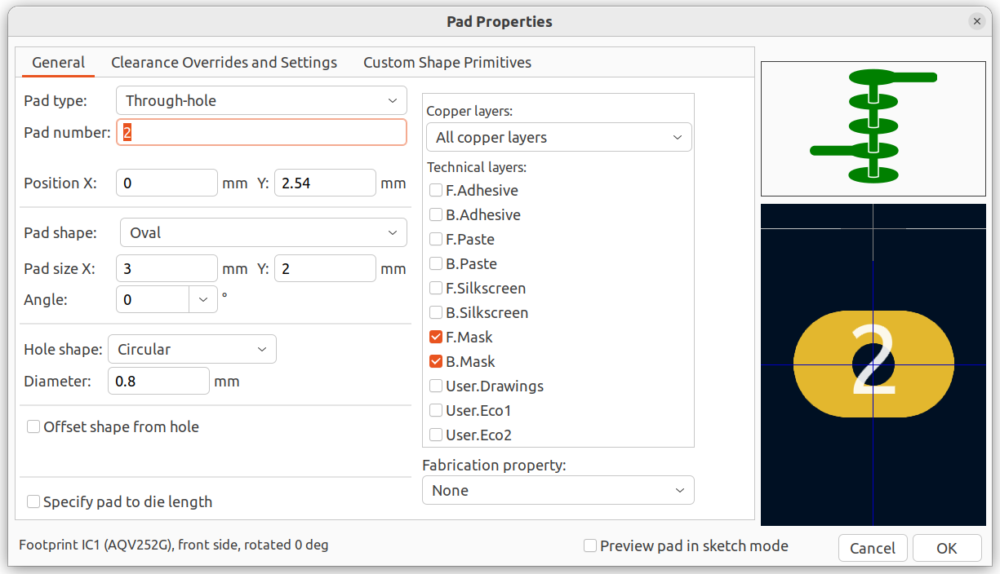
- Open the footprint editor
- Create a new footprint, or copy and paste one
- double-click on the pad and edit the sizes.
To modify several pads at once:
- modify the first pad
- right-click over this pad and select "Copy pad properties to default"
- Select the remaining pads with the mouse
- right-click over the pad selection and select "Paste default pad properties to selected"
User Libraries Path
You can create your own Symbols and footprints and store them in your user libraries.
When you store your project and open it on a different computer,
you may get an error because the path to the user libraries is different.
This problem can be solved by creating a symbolic link to the user libraries and giving KiCad the symbolic
link
as the path
Example
Create a folder named
/media/KiCad_libs
and create a symbolic link to your user libraries
ln -s /home/user/myKiCad_libraries /media/KiCad_libs
Then give KiCad the link to your user library
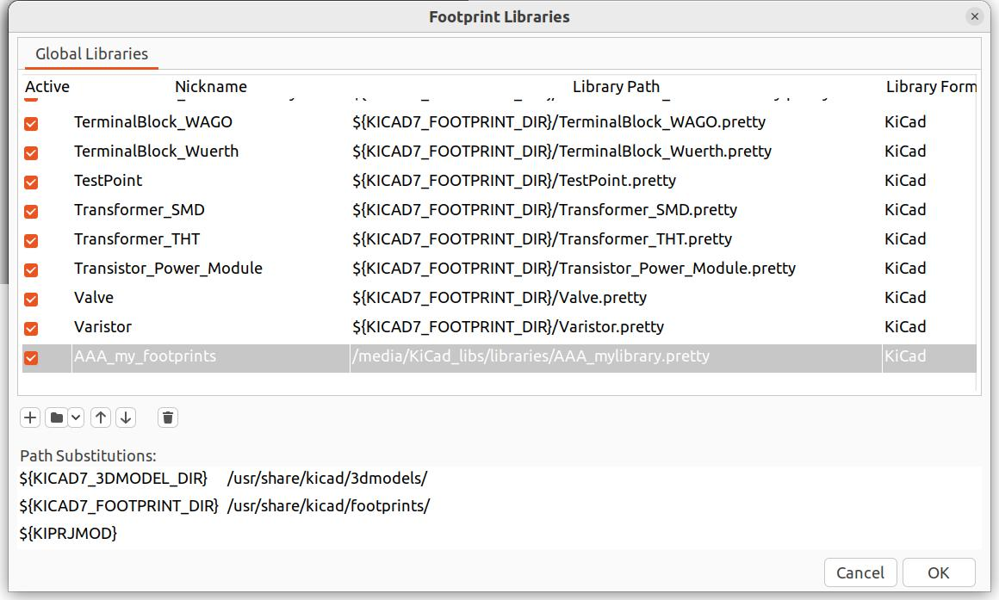
Check for Updates
KiCad asks on every startup
Would you like to automatically check for plugin updates on startup?
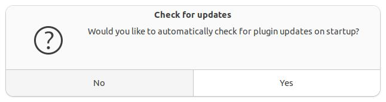
even after I uncheck the option in Preferences -> Preferences -> Plugin and Content Manager
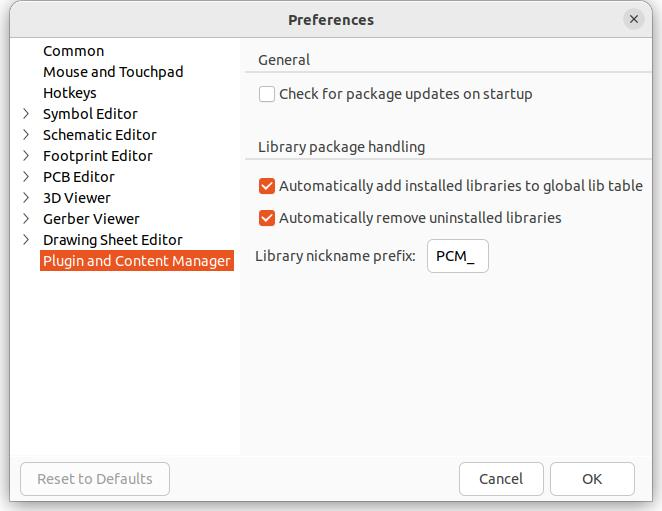